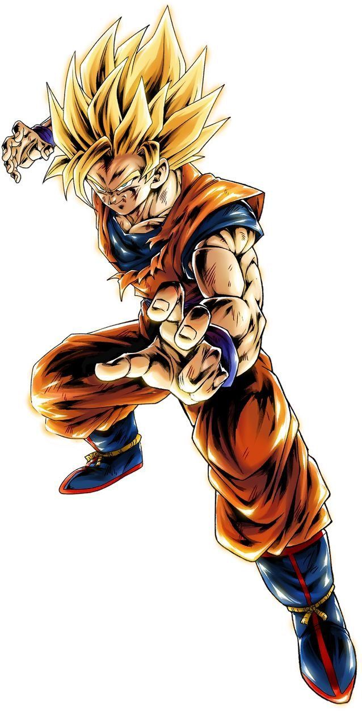

Son Goku
Historia
Son Goku es un guerrero saiyajin enviado a la Tierra cuando era un bebé para conquistarla. Su verdadero nombre es Kakarotto y nació en el planeta Vegeta. Antes de que su mundo fuera destruido, fue enviado en una cápsula espacial para sobrevivir. Al llegar a la Tierra, fue encontrado por un anciano llamado Son Gohan, quien lo crió como su nieto y le enseñó artes marciales. Tras golpearse la cabeza cuando era pequeño, Goku perdió su naturaleza agresiva y se convirtió en una persona noble, alegre y amante de los desafíos. A lo largo de su vida ha protegido la Tierra enfrentándose a enemigos poderosos, superando sus límites constantemente y alcanzando nuevas transformaciones como el Super Saiyajin y el Ultra Instinto.
Información
Raza:Saiyajin
Personalidad:Alegre, inocente, valiente
Habilidad principal:Kamehameha
Goku actualmente cuenta con una cantidad de 6 transformaciones en total:
- Super saiyajin
- Super saiyajin 2
- Super saiyajin 3
es una forma de metamorfosis física y mental que solo aquellos con sangre Saiyajin pueden alcanzar. Esta transformación implica un aumento masivo de poder, una aura dorada que rodea al guerrero y un patrón único de cabello que se eriza y se torna rubio luminoso, esta transformación fue vista por primera vez en su batalla contra Freezer
.jpg)
es una evolución del Super Saiyajin 1, que ofrece un aumento aún mayor en poder y velocidad. El cabello se vuelve más puntiagudo y electrificado, y el aura se intensifica. Esta forma multiplica el poder base del Saiyajin por 100, superando con creces al Super Saiyajin 1.
es la forma más poderosa de la línea de estados tradicionales del Super saiyajin en el manga original, así como en el anime de Dragon Ball Z. Es la tercera forma de Super saiyajin, el sucesor de la primera y segunda transformación